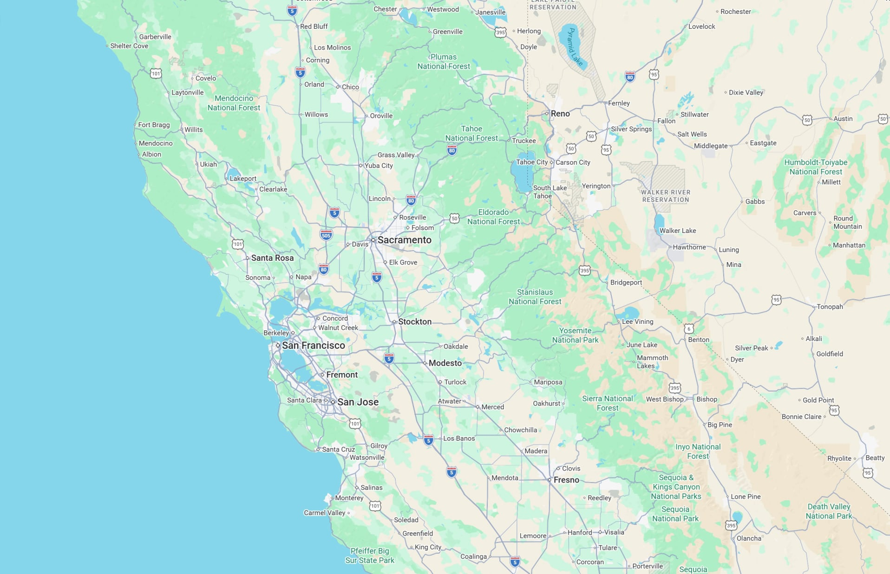
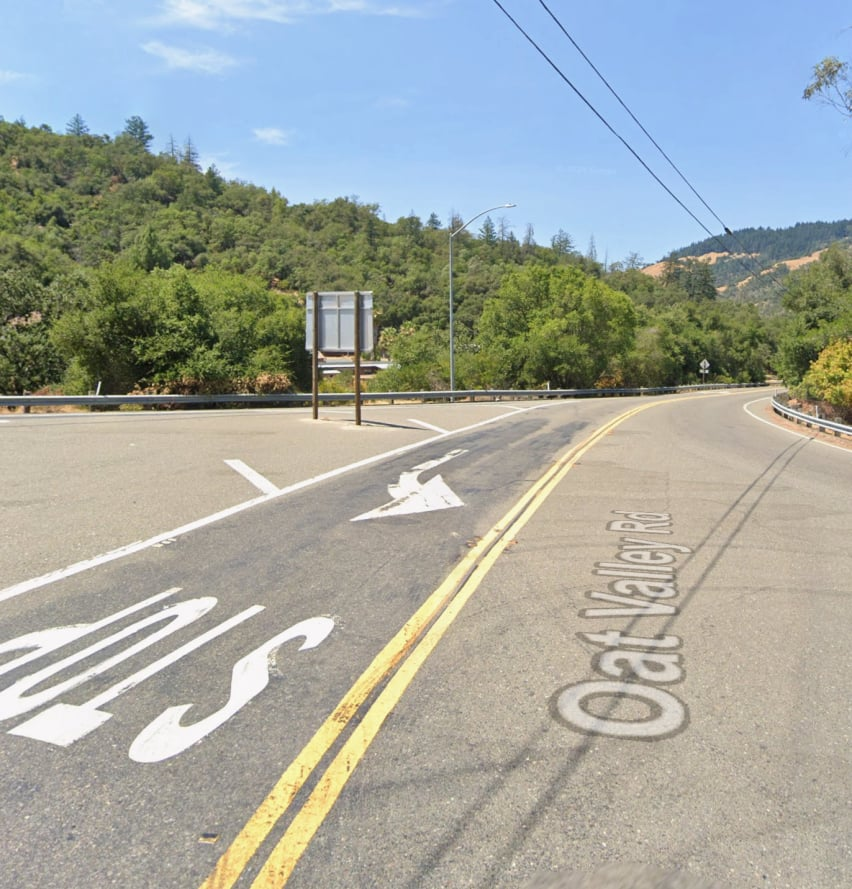
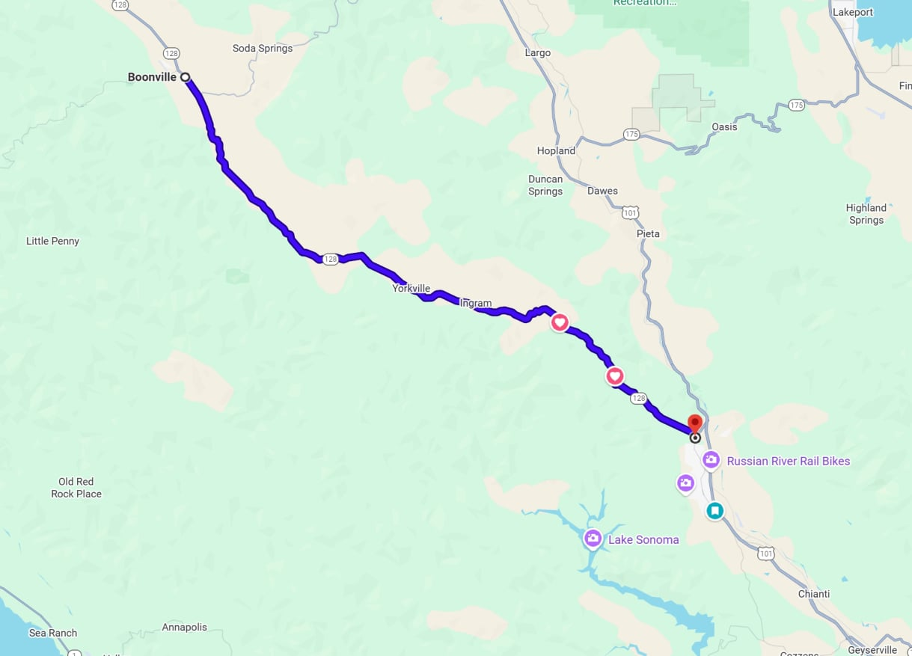
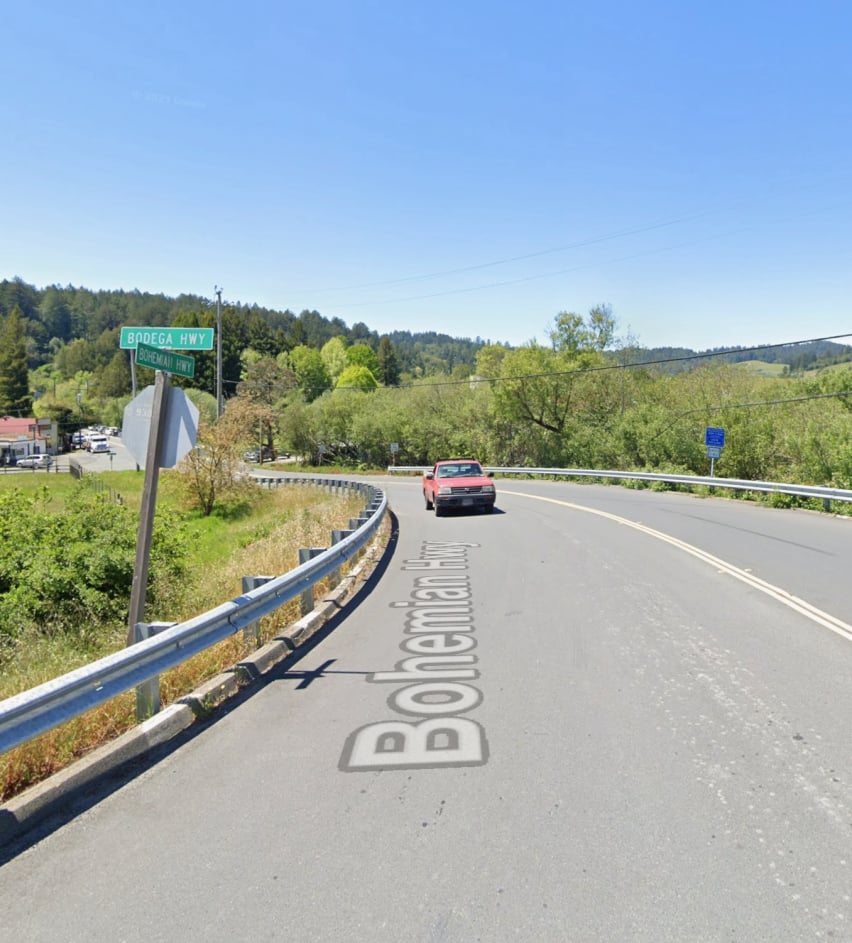
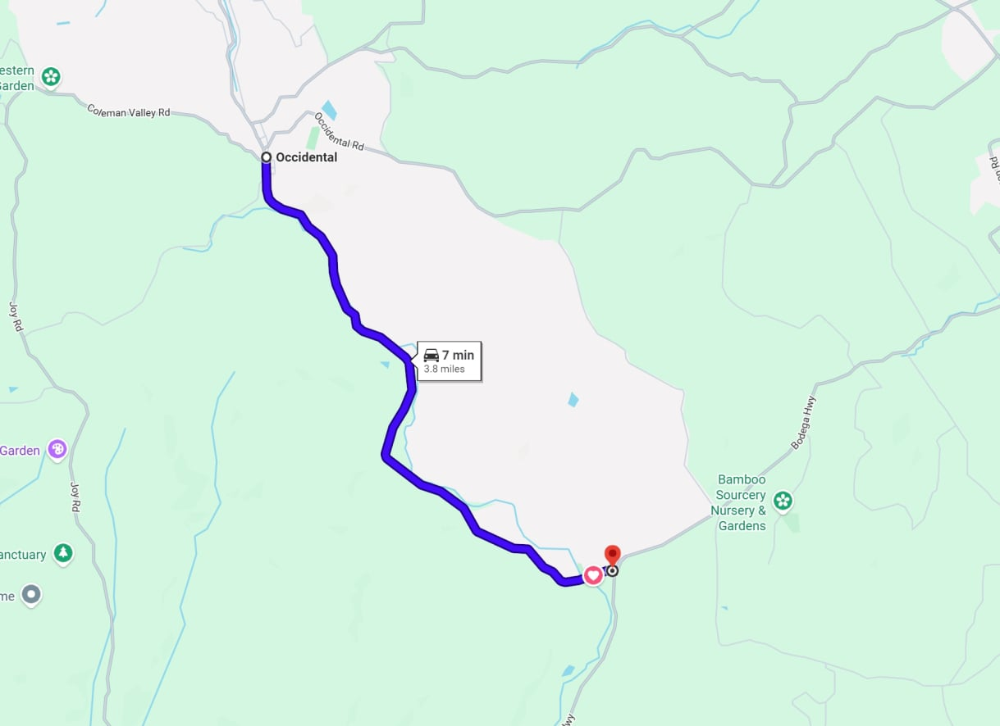
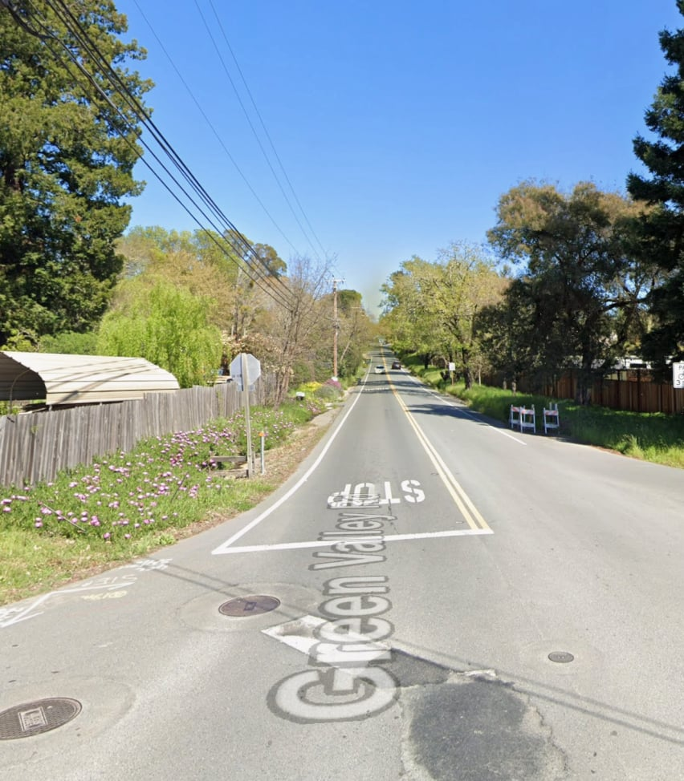
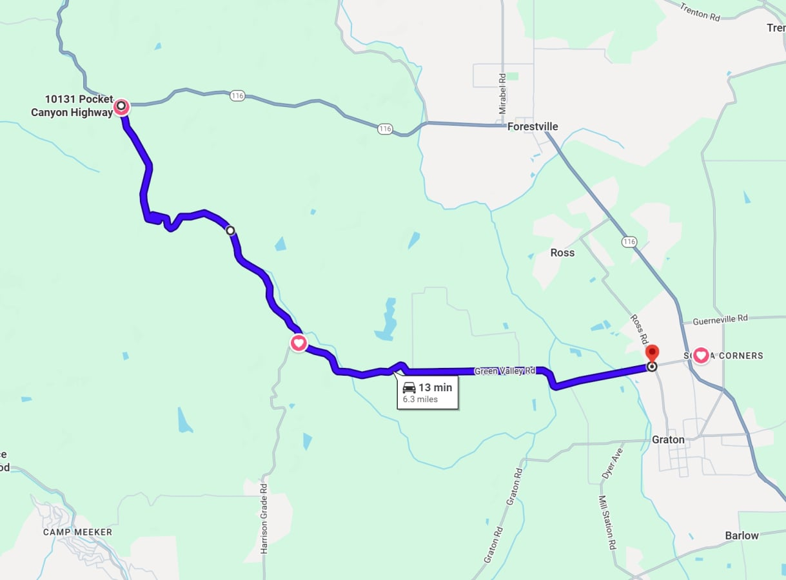

Free AI Website Builder
Check out some of these great enthusiast driving roads; perfect for your Porsche 911


Highway 128 between Preston and Boonville is one of those roads that quietly reminds you why driving can be a pleasure instead of a chore.
Leaving the small town of Preston, the road immediately settles into a relaxed rhythm. It follows the Navarro River through Anderson Valley, winding just enough to keep you engaged without ever feeling frantic. The curves are smooth and predictable, the pavement generally good, and the sightlines long enough that you can enjoy the flow rather than fight it. It’s a road that rewards steady inputs and patience, not speed.
On either side, vineyards, redwoods, and rolling hills trade places as the valley opens and narrows. In the morning, fog often hangs low over the river and vines, giving the drive a calm, almost cinematic feel. By afternoon, sunlight filters through the trees and lights up the valley in layers of green and gold. There’s a constant sense of being tucked into the landscape rather than cutting across it.
Traffic is usually light, especially on weekdays, and the pace feels unhurried. You’ll pass tasting rooms, old barns, and small pullouts that invite you to stop—even if you don’t. It’s the kind of road where you roll the windows down, let the engine settle into a comfortable cadence, and just enjoy the connection between car, road, and scenery.
By the time you reach Boonville, the drive feels complete in a way many roads don’t. It’s not dramatic or extreme—it’s simply well-balanced, scenic, and satisfying. Highway 128 doesn’t demand attention; it earns it.


The Bohemian Highway between Freestone and Occidental feels less like a route and more like a passage through old Northern California.
From the moment you leave Freestone, the road tightens and slows your mindset. The pavement narrows, the curves sharpen, and the forest closes in. Tall redwoods and dense coastal trees lean toward the roadway, filtering the light into shifting patches of green and gold. It’s a drive that asks you to be present—eyes up, hands steady, pace measured.
The corners come one after another, not fast but intimate, with short sightlines and constant elevation changes. There’s a natural cadence to it: brake, turn, unwind, repeat. You’re never in a hurry here, partly because the road won’t let you be, and partly because the surroundings make rushing feel out of place. The air is cooler, quieter, and often carries the faint smell of damp earth and pine.
You’ll pass weathered farmhouses, small clearings, and the occasional glimpse of rolling pasture breaking through the trees. It has a lived-in, timeless quality—less polished than Highway 128, more personal. On misty mornings, the fog settles low between the trunks, and the drive feels almost secret, like you’ve slipped into a different era.
As you approach Occidental, the forest gradually opens and the road releases you back into town, calmer than when you started. The Bohemian Highway isn’t about speed or spectacle. It’s about immersion—being wrapped in trees, history, and curves that feel shaped by decades of use rather than design. It’s a road you remember not for how fast you drove it, but for how it made you slow down.


Green Valley Road heading north from Manzana to Highway 116 is a driver’s road in the purest sense—quiet, smooth, and perfectly paced.
Leaving Manzana, the road immediately settles into a flowing sequence of bends that feel intentional rather than forced. The surface is notably good, encouraging confidence, and the curves link together in a way that rewards clean lines and smooth throttle. It’s twisty without being tight, technical without being stressful—a road that lets you find a rhythm and stay in it.
The surroundings add to the experience without stealing focus. Vineyards stretch out across gentle hills, broken up by stands of trees and old farm buildings. The valley opens and closes as you go, offering brief long views before pulling you back into another set of corners. In the late afternoon, the light washes over the vines and turns the drive into something almost serene.
Traffic is usually light, especially compared to Highway 116, which makes the road feel like a local secret. There’s little in the way of distractions—no stop signs, no sudden interruptions—just consistent elevation changes and well-cambered turns that invite a smooth, deliberate pace rather than outright speed.
As you near Highway 116, the road straightens and gently winds down, easing you back into the wider world. Green Valley Road doesn’t try to impress with drama. It impresses with balance: smooth pavement, engaging curves, and a natural flow that makes you wish it were just a little longer.
Free AI Website Builder